「你好」硬笔行书 · 实验原型
功能测试与审美验收分开。本页是交付材料，不是产品新增 UI；原型尚待用户审美确认，没有合并 main，也没有扩展其他 3498 字。
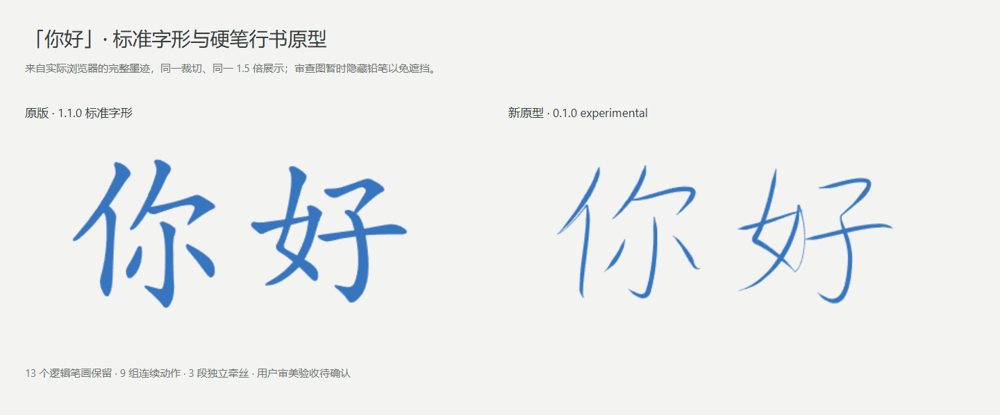
实时网页录制
新录制依次展示「你好」「你」「好」和各自清除；全部为正常速度的真实浏览器交互。原版录制单独保留。
1.1.0 标准字形0.1.0 硬笔行书原型
完整场景
逐段轮廓与中线
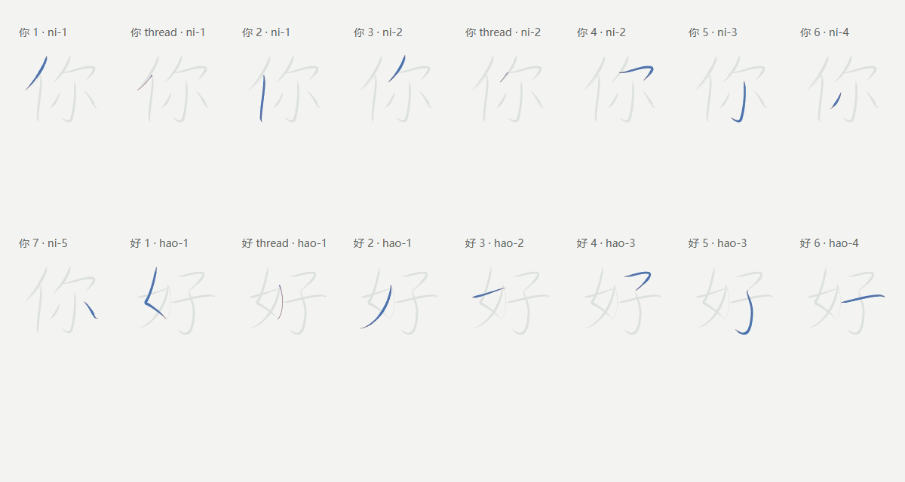
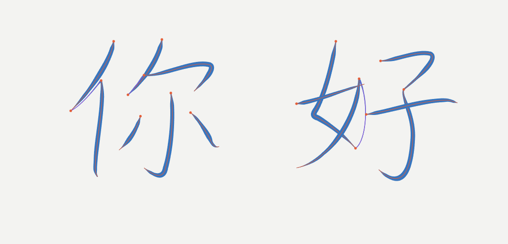
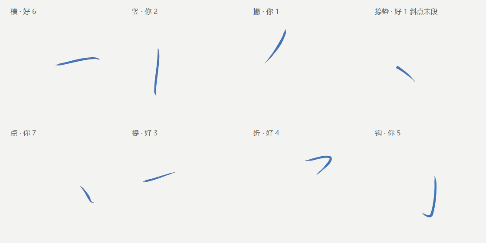
实际书写关键帧
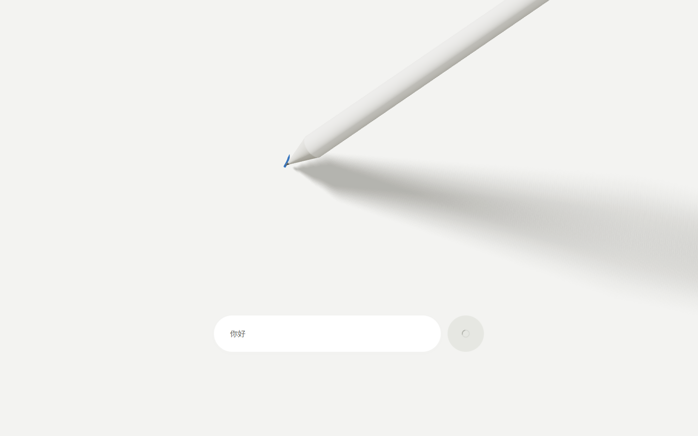
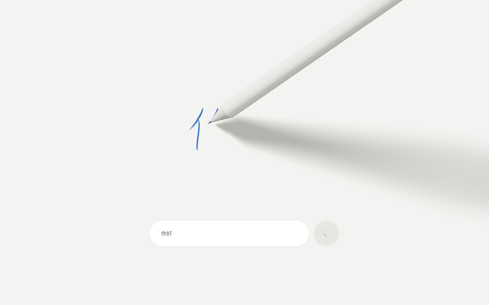
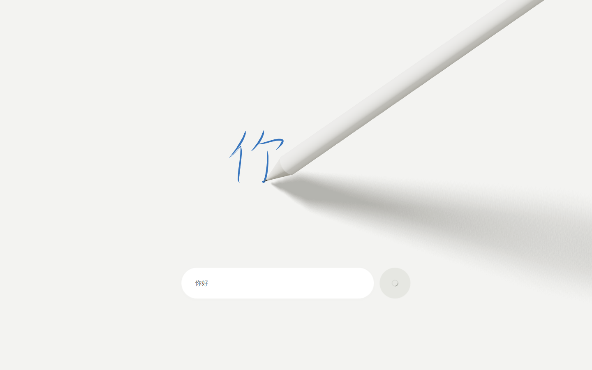
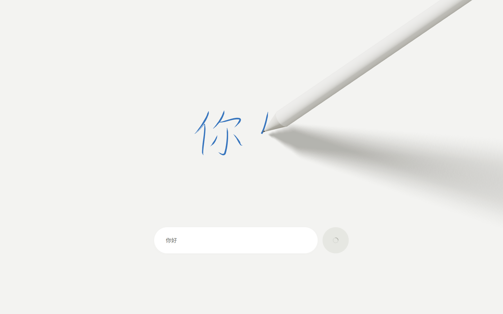
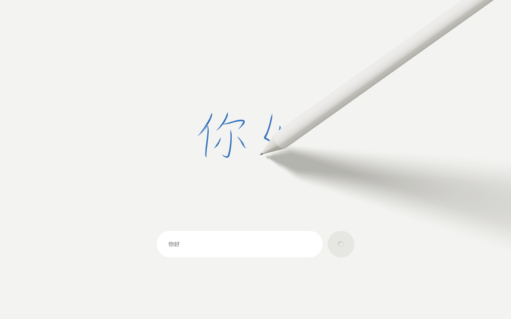
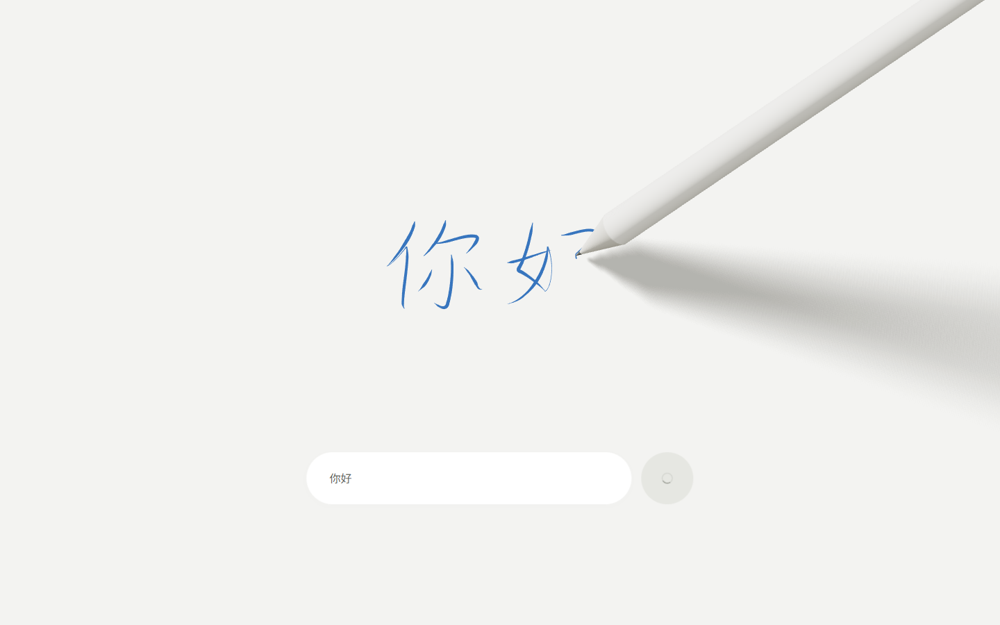
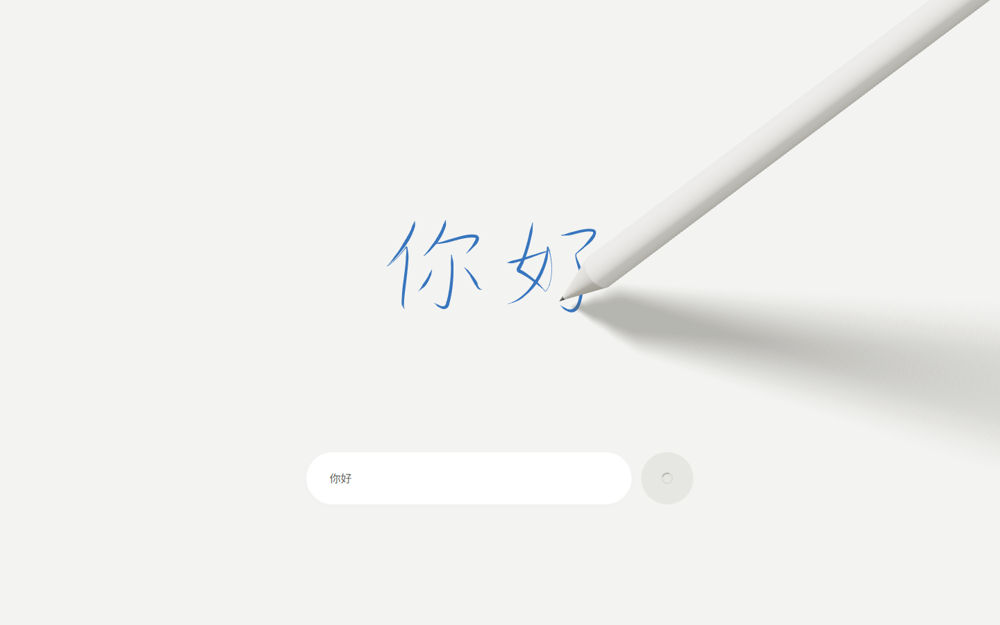
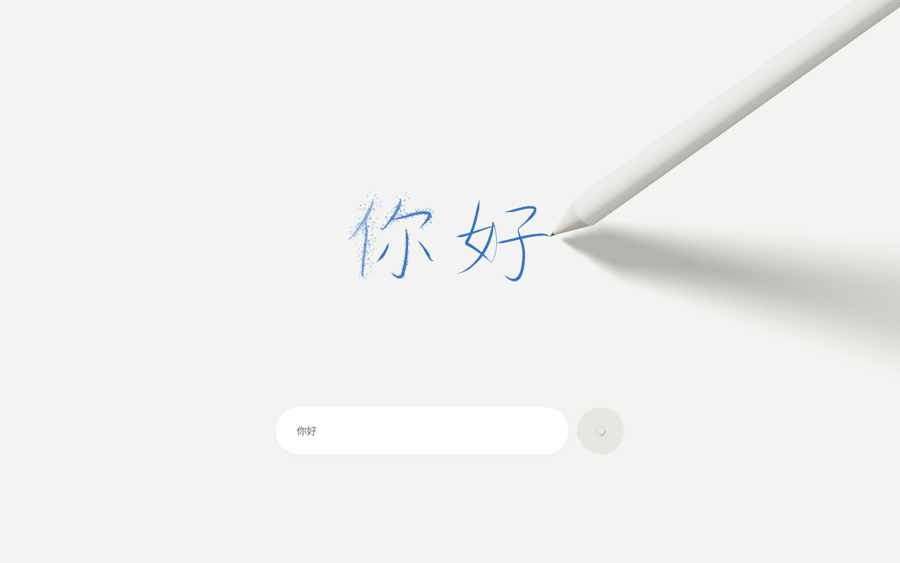
验收报告 · 视觉规范 · 工程审计 · 数据说明
Codex 的视觉检查不等于人类书法专家认证；正式视觉取舍留给用户。原始截图、SVG、完整轨迹、视频与 JSON 报告均随分支保存。